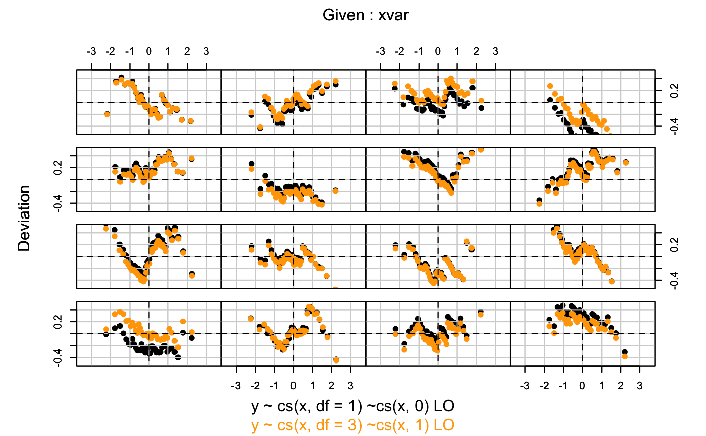

Superposes two worm plots from GAMLSS fitted objects. This is a diagnostic tool for comparing two solutions.
wp.twin(obj1, obj2 = NULL, xvar = NULL, xvar.column = 2, n.inter = 16, show.given = FALSE, ylim.worm = 0.5, line = FALSE, cex = 1, col1 = "black", col2 = "orange", warnings = FALSE, ...)
| obj1 | a GAMLSS fitted object |
|---|---|
| obj2 | an optional second GAMLSS fitted object |
| xvar | the explanatory variable against which the worm plots will be plotted |
| xvar.column | the number referring to the column of |
| n.inter | the number of intervals in which the explanatory variable
|
| show.given | whether to show the x-variable intervals in the top of the
graph, default is |
| ylim.worm | for multiple plots, this values is the y-variable limit,
default value is |
| line | whether to plot the polynomial line in the worm plot, default
value is |
| cex | the cex plotting parameter with default |
| col1 | the color for the points of |
| col2 | the color for the points of |
| warnings | a logical indicating whether warnings should be produced. The
default |
| … | for extra arguments, |
For multiple plots the xvar intervals and the coefficients of
the fitted cubic polynomials to the residuals (within each xvar
interval) are returned.
This function is a customized version of the wp() function found in
the gamlss package. Function wp.twin() allows overplotting of
two worm plots, each in its own color. The points of obj1 are plotted
first, the points of obj2 are superposed. This twin worm plot provide
a visual assessment of the differences between the solutions. Extra
arguments can be specified (e.g. xvar) that are passed down to the
wp() function of gamlss if specified. The worm plot is a
detrended normal QQ-plot that highlight departures from normality.
Argument xvar takes priority over xvar.column. The xvar
variable is cut into n.iter intervals with an equal number
observations and detrended normal QQ (i.e. worm) plots for each interval are
plotted. This is a way of highlighting failures of the model within
different ranges of the explanatory variable.
If line=TRUE and n.inter>1, the fitted coefficients from
fitting cubic polynomials to the residuals (within each x-variable interval)
can be obtain by e.g. coeffs<-wp.twin(model1,xvar=x,n.iner=9). van
Buuren et al. (2001) used these residuals to identify regions
(intervals) of the explanatory variable within which the model does not fit
adequately the data (called "model violation")
Stasinopoulos D. M. Rigby R.A. (2007) Generalized additive models for location scale and shape (GAMLSS) in R. Journal of Statistical Software, Vol. 23, Issue 7, Dec 2007, http://www.jstatsoft.org/v23/i07.
van Buuren and Fredriks M. (2001) Worm plot: simple diagnostic device for modelling growth reference curves. Statistics in Medicine, 20, 1259--1277.
van Buuren and Fredriks M. (2007) Worm plot to diagnose fit in quantile regression. Statistical Modelling, 7, 4, 363--376.
library(gamlss)#>#>#>#>#>#>#>#>#>#> GAMLSS-RS iteration 1: Global Deviance = 4795.764 #> GAMLSS-RS iteration 2: Global Deviance = 4797.935 #> GAMLSS-RS iteration 3: Global Deviance = 4797.948 #> GAMLSS-RS iteration 4: Global Deviance = 4797.949#> GAMLSS-RS iteration 1: Global Deviance = 4781.45 #> GAMLSS-RS iteration 2: Global Deviance = 4781.096 #> GAMLSS-RS iteration 3: Global Deviance = 4781.118 #> GAMLSS-RS iteration 4: Global Deviance = 4781.118coeff1 <- wp.twin(a,b,line=TRUE)coeff1#> $classes #> [,1] [,2] #> 1 12.22 14.64 #> 39 14.64 16.78 #> 77 16.78 18.36 #> 115 18.36 20.07 #> 154 20.07 21.93 #> 192 21.93 23.50 #> 230 23.50 25.07 #> 268 25.07 27.07 #> 306 27.07 28.93 #> 344 28.93 30.64 #> 382 30.64 32.50 #> 420 32.50 34.50 #> 458 34.50 36.21 #> 497 36.21 38.36 #> 535 38.36 40.93 #> 573 40.93 42.50 #> #> $coef #> [,1] [,2] [,3] [,4] #> [1,] -0.003504020 -0.15602304 0.038639888 0.027393705 #> [2,] 0.026515864 0.28483180 0.006095326 -0.093187380 #> [3,] -0.077876298 0.05628599 0.061894229 0.009416131 #> [4,] 0.209698618 -0.02456995 -0.034685801 -0.031058629 #> [5,] -0.060524040 0.39289973 0.065269080 -0.123323496 #> [6,] -0.020070631 0.04750037 -0.043512545 -0.042320484 #> [7,] -0.321110690 -0.10433001 0.168580670 0.056075986 #> [8,] 0.064037966 -0.05531105 -0.020258555 -0.090437121 #> [9,] 0.128936714 0.17913097 0.044109902 -0.049297039 #> [10,] -0.266363310 -0.01890913 0.017866160 -0.019747330 #> [11,] 0.007205697 -0.11774411 0.137228619 0.021868979 #> [12,] 0.201188563 0.15077864 -0.052544238 -0.002615670 #> [13,] 0.007664226 -0.23640794 -0.009871868 0.039585716 #> [14,] -0.017449540 0.16811355 0.026607674 -0.009545766 #> [15,] 0.124703184 0.11954586 0.020848864 -0.035485678 #> [16,] -0.174190902 -0.16016432 -0.081501991 0.003570043 #>rm(a,b,coeff1)